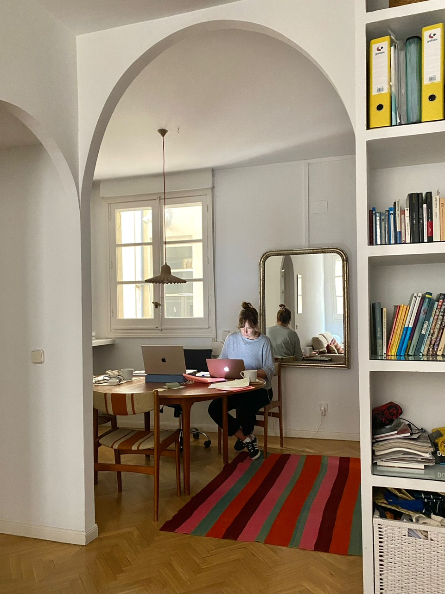

La esencia de cualquier marca se forja a través del diseño gráfico, elementos visuales esenciales que van más allá de la mera estética. Se inicia con la creación del logotipo, seguido de la definición de sus colores corporativos y la elección de tipografías. Este diseño se expande a diversas aplicaciones, desde la documentación de uso corporativo a la presencia en redes sociales.
Un aspecto fundamental, es su aplicación en el diseño de páginas web, donde estos elementos visuales constituyen la primera impresión que los usuarios tienen de la marca, otorgándoles una importancia significativa.
La imagen proyectada a través del diseño gráfico, el diseño web y su maquetación debe inspirar confianza y credibilidad. La contribución clave a la confianza y credibilidad de un negocio se logra mediante una imagen profesional, que se construye a través de:
|| Imagen corporativa adaptada a la línea de negocio: Reflejando la misión, visión, valores, target y los productos o servicios ofrecidos.
|| Disposición de elementos en las páginas web: La organización efectiva de los elementos dentro del sitio web.
|| Elección de tipografías y paletas de colores: Elementos que influyen en la percepción visual y la identidad de la marca.
|| Contraste adecuado y facilidad de lectura: Asegurando que el texto sea fácilmente legible.
|| Calidad de la información: Contenido preciso y relevante en la página web.
|| Actualización frecuente: Una imagen corporativa exitosa evoluciona y se actualiza regularmente, tanto en la página web como en otros medios.
|| Usabilidad: La facilidad de navegación es esencial para una buena experiencia de usuario.
La relación entre diseño gráfico y maquetación web es crucial en la construcción de una imagen de marca profesional. Esta sincronización entre diseño y maquetación es esencial para crear una presencia sólida y coherente en todos los aspectos, ya sea en línea u offline.
¿Por qué deberías tener una página web para tu empresa o negocio? La presencia en la red es cada día es más necesaria, todo y todos, buscamos la información a través de internet. Un sitio web no sólo hará que te encuentren tus clientes y posibles nuevos clientes, sino que además te dará presencia, credibilidad, y respaldará tu negocio. Dará confianza.
Tener una página web, ayudará a consolidar tu marca en internet al estar visible en todo momento promocionando tus productos o servicios y llegando a un mayor alcance de publico. Si estás interesado en tener tu propia web, no dudes en escribirnos, cuéntame que necesitas y te asesoraré. ¡Gracias!